01
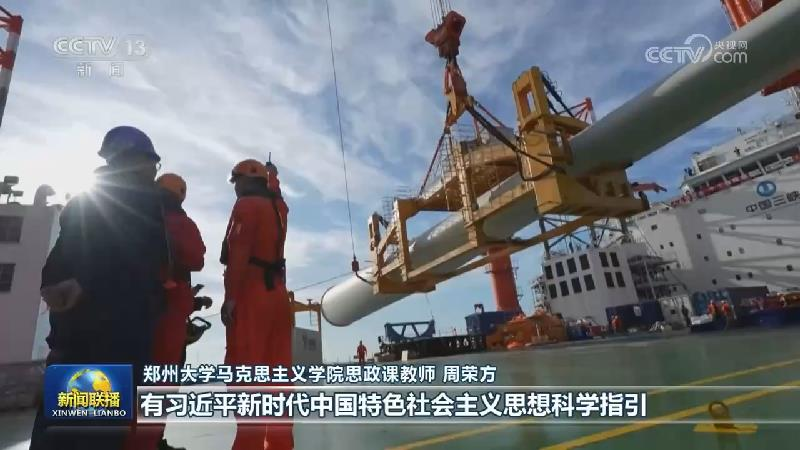
【学习贯彻党的二十届五中全会精神】严字当头 实干为要 把学习成效转化为干事创业的强大动力
治国必先治党，党兴才能国强。党的二十届五中全会对进一步开创新时代管党治党、兴党强党新局面，具有重大现实意义和长远指导意义。连日来，广大知识分子和青年群体认真学习贯彻党的二十届五中全会精神。大家表示，要把严的要求、实的作风落实到实践之中，把学习成效转化为干事创业的强大动力，为强国建设、民族复兴作出新的贡献。


治国必先治党，党兴才能国强。党的二十届五中全会对进一步开创新时代管党治党、兴党强党新局面，具有重大现实意义和长远指导意义。连日来，广大知识分子和青年群体认真学习贯彻党的二十届五中全会精神。大家表示，要把严的要求、实的作风落实到实践之中，把学习成效转化为干事创业的强大动力，为强国建设、民族复兴作出新的贡献。
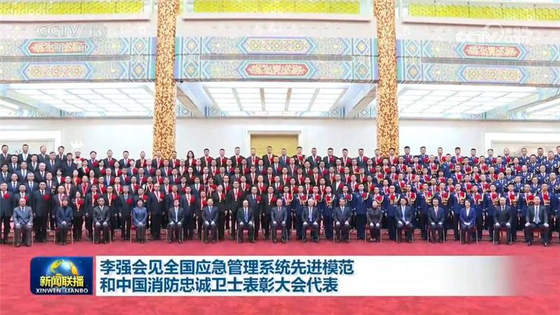
全国应急管理系统先进模范和中国消防忠诚卫士表彰大会5日上午在京举行。会前，中共中央政治局常委、国务院总理李强会见与会代表并合影，向他们表示祝贺。
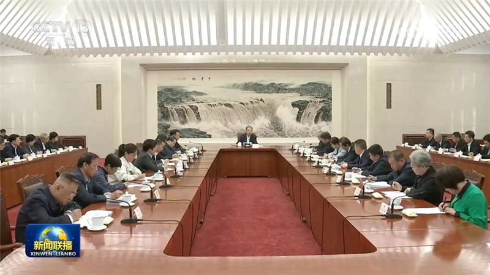
中共中央政治局常委、全国人大常委会委员长赵乐际5日上午同列席十四届全国人大常委会第二十五次会议的全国人大代表座谈交流。他强调，人大代表要带头学习宣传贯彻党的二十届五中全会精神，加强自身思想政治和纪律作风建设，提高依法履职能力。
第六届国际道教论坛11月5日在中国浙江杭州开幕。中共中央政治局常委、全国政协主席王沪宁发来贺信，向论坛召开表示祝贺，向出席论坛的嘉宾致以问候。
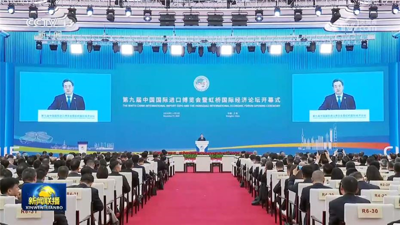
第九届中国国际进口博览会暨虹桥国际经济论坛5日在上海开幕，中共中央政治局常委、国务院副总理丁薛祥出席并作主旨讲话。
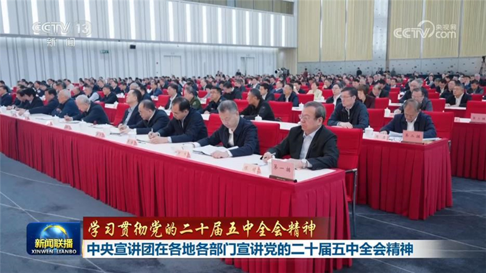
学习贯彻党的二十届五中全会精神中央宣讲团成员在各地各部门宣讲，并深入基层与干部群众互动交流。
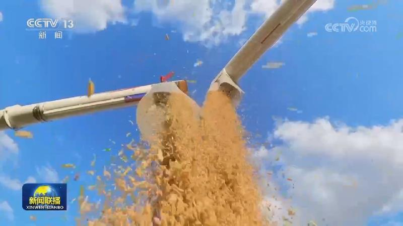
秋粮产量约占全年粮食产量的四分之三，农业农村部最新农情调度显示，全国秋粮收获已过九成，丰收已成定局。
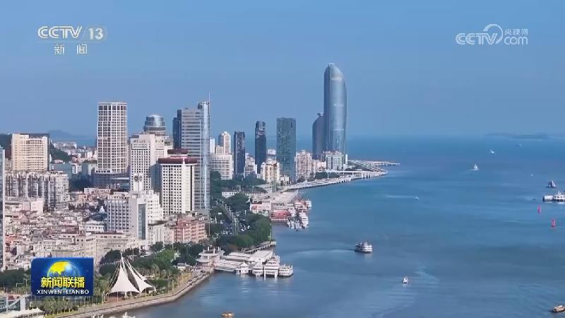
商务部发布数据显示，今年前9个月，我国服务进出口总额达57687.7亿元，同比增长8.5%，继续保持稳定增长态势。
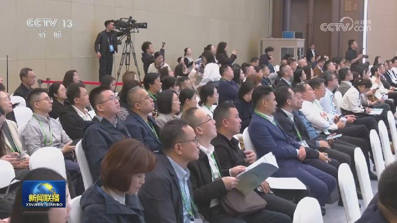
中国国际进口博览会的重要组成部分——第九届虹桥国际经济论坛，围绕“稳定合作 共建开放型世界经济”主题，今天（11月5日）举行多场分论坛。
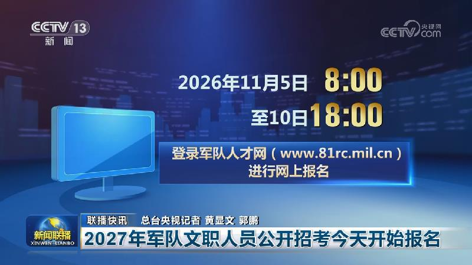
2026年世界互联网大会乌镇峰会闭幕
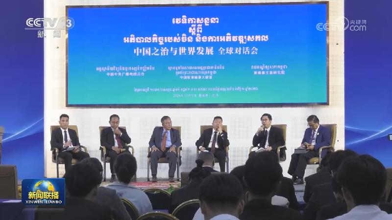
连日来，中国中央广播电视总台“中国之治与世界发展”全球对话会分别在法国、科威特、乌拉圭和柬埔寨举行专场活动。总台CGTN还面向意大利、德国、巴西等国受众举办10余场线上线下海外宣介活动。与会各国嘉宾围绕中国国家治理的成功经验、中国发展对世界的贡献等话题展开深入交流。大家表示，中国共产党二十届五中全会胜利召开，为观察“中国之治”提供了难得窗口。……
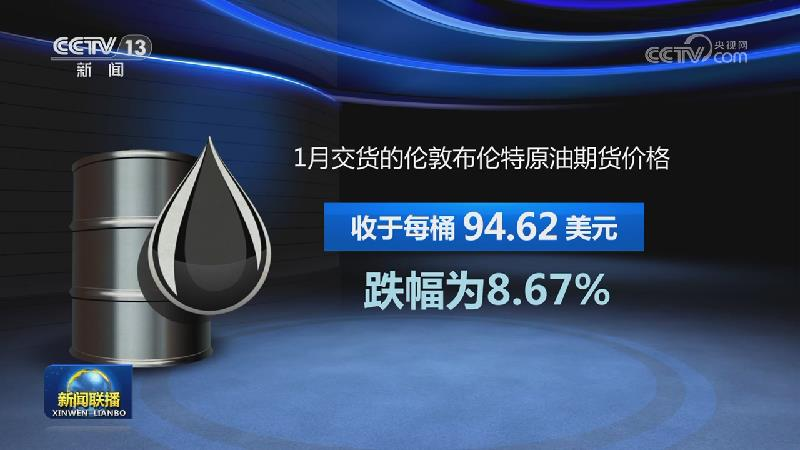
4日，伊朗全国多地举行谴责霸权主义的集会，纪念1979年伊朗学生占领美国大使馆事件，以及伊朗官方设定的“反对全球傲慢日”。伊朗最高领袖穆杰塔巴当天发表致辞说，美国中期选举结果带来的国会力量对比变化绝不会改变美国的霸权行为，对美让步就能令其改变敌视伊朗政策的想法大错特错。他强调，如果侵略行为再次发生，伊朗将作出更大规模的回应。
欧佩克报告称原油运输及保险成本飙升